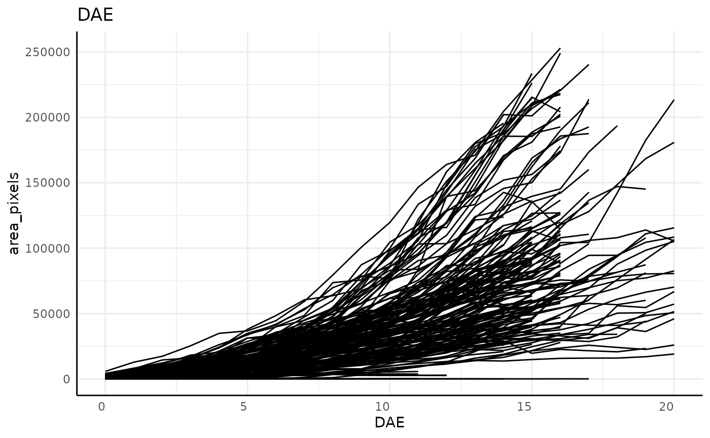

Intro to `pcvr`
pcvr v1.0.0
Josh Sumner
Source:vignettes/articles/pcvrTutorial1.Rmd
pcvrTutorial1.RmdOutline
-
pcvrGoals - Load Package
- Read in Data
- Join metadata
- Remove outliers
- Single Value Trait Analysis
- Longitudinal Analysis
- Resources
pcvr Goals
Currently pcvr aims to:
- Make common tasks easier and consistent
- Make select Bayesian statistics easier
There is room for goals to evolve based on feedback and scientific needs.
Read in Data
Some plantCV output comes as a very long csv file.
Handling large experiments/those with lots of images can be difficult if the output is multiple Gb.
. . .
The read.pcv function helps simplify common tasks
related to getting your data ready to use in R.
Read in Data (2)
read.pcv takes several arguments but only the filepath
argument is required, most other arguments are for special cases.
args("read.pcv")## function (filepath, mode = NULL, traitCol = "trait", labelCol = "label",
## valueCol = "value", reader = NULL, filters = NULL, awk = NULL,
## ...)
## NULLRead in Data (3)
To see details about arguments use ?read.pcv. Three main
features are:
-
modeWill automatically handle widening/lengthening data on read in. -
readerallows for use ofdata.table::fread,vroom::vroom, or other functions to improve speed with large data. This defaults to NULL whereutils::read.csvis used. -
filtersallows Unix based systems to subset local large data without reading it into memory.
Read in Data (4)
There are datasets online for use with pcvr examples,
here we read one in as a wide dataframe.
sv <- read.pcv(
paste0(
"https://raw.githubusercontent.com/joshqsumner/",
"pcvrTestData/main/pcv4-single-value-traits.csv"
),
reader = "fread"
)
dim(sv)## [1] 2854 45. . .
colnames(sv)[19:45]## [1] "area_pixels" "area_above_reference_pixels"
## [3] "area_below_reference_pixels" "color_chip_size_median"
## [5] "convex_hull_area_pixels" "convex_hull_vertices_none"
## [7] "ellipse_angle_degrees" "ellipse_eccentricity_none"
## [9] "ellipse_major_axis_pixels" "ellipse_minor_axis_pixels"
## [11] "height_pixels" "height_above_reference_pixels"
## [13] "height_below_reference_pixels" "horizontal_reference_position_none"
## [15] "hue_circular_mean_degrees" "hue_circular_std_degrees"
## [17] "hue_median_degrees" "in_bounds_none"
## [19] "longest_path_pixels" "median_color_chip_height_median"
## [21] "median_color_chip_width_median" "object_in_frame_none"
## [23] "percent_area_above_reference_none" "percent_area_below_reference_none"
## [25] "perimeter_pixels" "solidity_none"
## [27] "width_pixels"Read in Data (exercise)
Read in the same example dataset from the previous slides as both wide and long formats. Compare the dimensions of the dataframes and their size in memory.
Read in Data (solution)
svw <- read.pcv(
paste0(
"https://raw.githubusercontent.com/joshqsumner/",
"pcvrTestData/main/pcv4-single-value-traits.csv"
),
mode = "wide", reader = "fread"
)
dim(svw) # [1] 2824 45
object.size(svw) # 1304192 bytes
svl <- read.pcv(
paste0(
"https://raw.githubusercontent.com/joshqsumner/",
"pcvrTestData/main/pcv4-single-value-traits.csv"
),
mode = "long", reader = "fread"
)
dim(svl) # [1] 77058 20
object.size(svl) # 10070624 bytes
10070624 / 1304024 # 7.7 times larger in long formatWhy does the long data take up so much more space?
. . .
Join Metadata
We can either parse the barcodes for design information or join a key file using common barcodes.
key <- read.csv(paste0(
"https://raw.githubusercontent.com/joshqsumner/",
"pcvrTestData/main/smallPhenotyperRun_key.csv"
))
sv <- merge(sv, key, by = "barcode"). . .
Data joining tends to be straightforward enough, but other metadata tasks can be more involved.
Handling time with bw.time
The bw.time function parses timestamps into (optionally)
several kinds of time labels.
Here we show a few examples before using the default behavior to make DAS, DAP, and DAE (days after start, planting, and emergence).
Handling time with bw.time (2)
bw.time takes an optional mode argument,
which can control how many types of time are output. Here we make Days
after Start (DAS).
bw.time(sv,
mode = "DAS", phenotype = "area_pixels",
group = c("barcode", "rotation"), plot = TRUE
)$plot## [[1]]Handling time with bw.time (3)
We can also make Days after Emergence with mode="DAE",
using a cutoff for emergence on a phenotype.
bw.time(sv,
mode = "DAE", phenotype = "area_pixels",
cutoff = 10, group = c("barcode", "rotation"), plot = TRUE
)$plot## [[1]]
Handling time with bw.time (4)
svt <- bw.time(sv,
plantingDelay = 0, phenotype = "area_pixels",
cutoff = 10, group = c("barcode", "rotation"), plot = FALSE
). . .
svt[1:8, c("timestamp", "DAS", "DAP", "DAE", "area_pixels")]## timestamp DAS DAP DAE area_pixels
## 1 2023-04-22 22:18:33 8 8 4 15401
## 2 2023-04-21 00:40:29 6 6 2 6073
## 3 2023-05-01 23:46:49 17 17 13 159543
## 4 2023-04-23 22:42:26 9 9 5 24458
## 5 2023-05-04 18:57:23 19 19 15 218229
## 6 2023-04-29 23:26:22 15 15 11 106655
## 7 2023-05-03 02:57:31 18 18 14 193877
## 8 2023-04-18 23:55:38 4 4 0 1173Remove Outliers
Before removing outliers we aggregate across photos on the same day of the same plant.
phenotypes <- colnames(svt)[19:45]
phenoForm <- paste0("cbind(", paste0(phenotypes, collapse = ", "), ")")
groupForm <- "DAS+barcode+genotype+fertilizer"
form <- as.formula(paste0(phenoForm, "~", groupForm))
sv_ag_with_outliers <- aggregate(form, data = svt, mean, na.rm = TRUE)
dim(sv_ag_with_outliers)## [1] 1387 31. . .
Now we can remove outliers as the last step before getting into analysis.
Removing Outliers with bw.outliers
The bw.outliers function uses Cook’s Distance to detect
outliers.
. . .
Cook’s Distance is model (glm) based, so we detect outliers on a per-phenotype (outcome) basis per some set of groups (design variables).
. . .
sv_ag <- bw.outliers(
df = sv_ag_with_outliers,
phenotype = "area_pixels",
group = c("DAS", "genotype", "fertilizer"),
plotgroup = c("barcode")
)## Warning in bw.outliers(df = sv_ag_with_outliers, phenotype = "area_pixels", :
## 18 groupings had all observations removed
sv_ag$plot
sv_ag <- sv_ag$dataSingle Value Trait Analysis
Some of our most common goals involve comparing single value traits at a given time.
Even these simple type of questions can take multiple forms, but before getting into those we’ll rescale our area phenotype to .
pxTocm2 <- 42.5^2 # 51^2 / 1.2^2 : px per cm^2 / color chip size
sv_ag$area_cm2 <- sv_ag$area_pixels / pxTocm2What are we asking?
- Are the means (or distributions) of X groups different?
- Is the difference biologically meaningful?
T tests
At this point difference of means tests are a common next step.
ex <- sv_ag[sv_ag$fertilizer == "100" & sv_ag$DAS == 19 & sv_ag$genotype %in% c("B73", "Mo17"), ]
t.test(area_cm2 ~ genotype, ex)##
## Welch Two Sample t-test
##
## data: area_cm2 by genotype
## t = 10.978, df = 8.04, p-value = 4.053e-06
## alternative hypothesis: true difference in means between group B73 and group Mo17 is not equal to 0
## 95 percent confidence interval:
## 56.19573 86.05105
## sample estimates:
## mean in group B73 mean in group Mo17
## 113.8040 42.6806Interpreting P-values
print(box)## function (which = "plot", lty = "solid", ...)
## {
## which <- pmatch(which[1L], c("plot", "figure", "inner", "outer"))
## .External.graphics(C_box, which = which, lty = lty, ...)
## invisible()
## }
## <bytecode: 0x5570341aa930>
## <environment: namespace:graphics>Based on an of 0.05 we would say that B73 and Mo17 have statistically significant differences in size 19 days after planting.
. . .
But correct interpretation does not tell us the probability that one genotype is larger than the other.

Interpreting P-values (3)
Correct interpretation: If these two genotypes have the same area at the population level then there would be a chance of estimating the observed difference.
We can ask more specific questions using different tools.
Posterior Probability
In Bayesian statistics posterior probability is used instead of p-values.
The interpretation is much simpler, posterior probability is the probability that some hypothesis is true given the observed data and prior evidence.
Bayesian vs Frequentist
In a Bayesian context we flip “random” and “fixed” elements.
| Fixed | Random | Interpretation | |
|---|---|---|---|
| Frequentist | True Effect | Data | If the True Effect is 0 then there is an % chance of estimating an effect of this size or more. |
| Bayesian | Data | True Effect | Given the estimated effect from our data there is a P probability of the True Effect being a difference of at least X |
Bayesian vs Frequentist (2)
You should pick statistical methods and your design models based on your research questions.
Be aware of the advantages and limitations that come with your phrasing of a question and chosen method.
One of the goals in pcvr is to make it easier to answer
a broader range of questions.
Conjugacy
Historically Bayesian methods have been difficult to implement because of computational complexitity.
. . .
Using “conjugate” prior distributions makes simple questions very quick to answer.
conjugate function
conjugate uses conjugate priors and moments from given
distributions to make computationally light Bayesian comparisons of
single or multi value traits.
Several methods are available for different distributions.
conjugate function (2)
- t: Difference of means for gaussian data.
- gaussian: Difference of distributions for gaussian data.
- beta: Difference of distributions for data bounded
- lognormal: Difference of distributions for log normal data (right skew)
- poisson: Difference of distributions for count data
- negative binomial: Alternative difference of distributions for count data (given “r”)
- dirichlet: Difference of categorical distributions (2 versions)

Bayesian comparison with conjugate
Here is an example of using the conjugate function from
pcvr to do a Bayesian analog to a T test and a region of
practical equivalence (ROPE) comparison.
s1 <- sv_ag[sv_ag$fertilizer == "100" & sv_ag$DAS == 19 & sv_ag$genotype == "W605S", "area_cm2"]
s2 <- sv_ag[sv_ag$fertilizer == "50" & sv_ag$DAS == 19 & sv_ag$genotype == "W605S", "area_cm2"]
conj <- conjugate(s1, s2,
method = "t", plot = TRUE,
priors = list(mu = c(20, 20), n = c(1, 1), s2 = c(20, 20)),
rope_range = c(-10, 10),
support = seq(0, 125, 0.1)
)Bayesian comparison with conjugate
## Warning in cpp_rlst(n, df, mu, sigma): NAs produced## `ci` is too small or x does not contain enough data points, returning
## NAs.
## `ci` is too small or x does not contain enough data points, returning
## NAs.Bayesian comparison with conjugate
(2)
conjugate returns a list with several useful
components.
lapply(conj, class) # [1:length(conj)]## $summary
## [1] "data.frame"
##
## $posterior
## [1] "list"
##
## $plot
## [1] "patchwork" "gg" "ggplot"Bayesian comparison with conjugate
(2)
The summary item contains HDE and HDI estimates for samples and their difference (if two samples are provided).
conj$summary## HDE_1 HDI_1_low HDI_1_high HDE_2 HDI_2_low HDI_2_high hyp post.prob
## 1 91.12784 71.46182 110.7939 31.24997 NA NA equal 0
## HDE_rope HDI_rope_low HDI_rope_high rope_prob
## 1 NA NA NA NAThe posterior item is an updated set of priors. It can be recycled as more data is collected in Bayesian updating, but the practical speed difference is trivial.
The remaining items are the plot and data that was used in making the plot.
conjugate (exercise)
Convert height from px to cm and report the probability that the difference in height between B73 in 50% fertilizer and W605x in 0% fertilizer is larger than .
conjugate (solution)
s1 <- sv_ag[sv_ag$fertilizer == "50" & sv_ag$DAS == 19 &
sv_ag$genotype == "B73", "height_pixels"] / 42.5
s2 <- sv_ag[sv_ag$fertilizer == "0" & sv_ag$DAS == 19 &
sv_ag$genotype == "W605S", "height_pixels"] / 42.5
conj <- conjugate(s1, s2,
method = "gaussian", plot = TRUE,
priors = list(mu = c(20, 20), n = c(1, 1), s2 = c(20, 20)),
support = seq(0, 60, 0.1), rope_range = c(-10, 10)
)
# 1-conj$summary$rope_prob: 0.318Longitudinal Analysis
One of the core benefits of image based high throughput phenotyping is that you can quickly collect non-destructive samples.
Keeping the plants alive allows for longitudinal data on individuals.
Longitudinal Analysis Challenges
These benefits add complexity to our data.
Longitudinal data is:
- Autocorrelated
- Often non-linear
- Heteroskedastic
Modeling longitudinal data
pcvr supports 8 growth models fit with 4 different
methods (nls, nlrq, nlme, and
brms).
Modeling longitudinal data
## Warning: Removed 1 row containing missing values or values outside the scale range
## (`geom_line()`).
Data preparation
For this example we subset the data, but we could also model the
entire dataset by making a new group column that has
fertilizer and genotype information.
sub <- sv_ag[sv_ag$genotype == "W605S", ]
sub$fertilizer <- as.character(sub$fertilizer)To set up our model it generally helps to plot the data and make sure we can use an appropriate model and can identify our groups and individuals.
ggplot(sub, aes(x = DAS, y = area_cm2, group = barcode, color = fertilizer)) +
geom_line() +
theme_minimal()Initializing with growthSS
The growthSS function serves as a “self starter” for 8
common growth models (logistic, gompertz, monomolecular, linear,
exponential, and power law).
ss <- growthSS(
model = "gompertz",
form = area_cm2 ~ DAS | barcode / fertilizer,
sigma = "spline",
df = sub,
priors = list("A" = 130, "B" = 15, "C" = 3),
type = "brms"
)See ?growthSS and ?growthSim for
details.
Fitting with fitGrowth
If you are using one of the 6 common growth models supported by
growthSS then you can use fitGrowth to fit the
model using Stan.
fit_test <- fitGrowth(ss,
iter = 1000,
cores = 2, chains = 2, backend = "cmdstanr",
control = list(adapt_delta = 0.999, max_treedepth = 20)
)
summary(fit_test)Testing with testGrowth
This example uses a Bayesian model where hypothesis testing is much more robust.
For examples of testGrowth on frequentist models see the
intermediate growth modeling tutorial.
Resources
For a more complete workflow using a small bellwether dataset see the
bellwether vignette and tutorials
on github.
browseVignettes("pcvr") # requires you to have build vignettes on installation
# see installation documentThe help-datascience DDPSC slack channel and
pcvr github repository are
good places to ask questions.